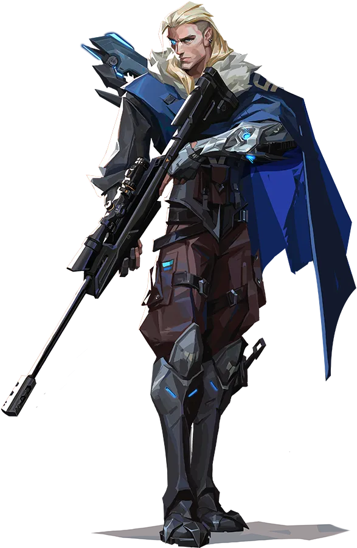
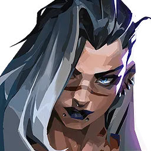
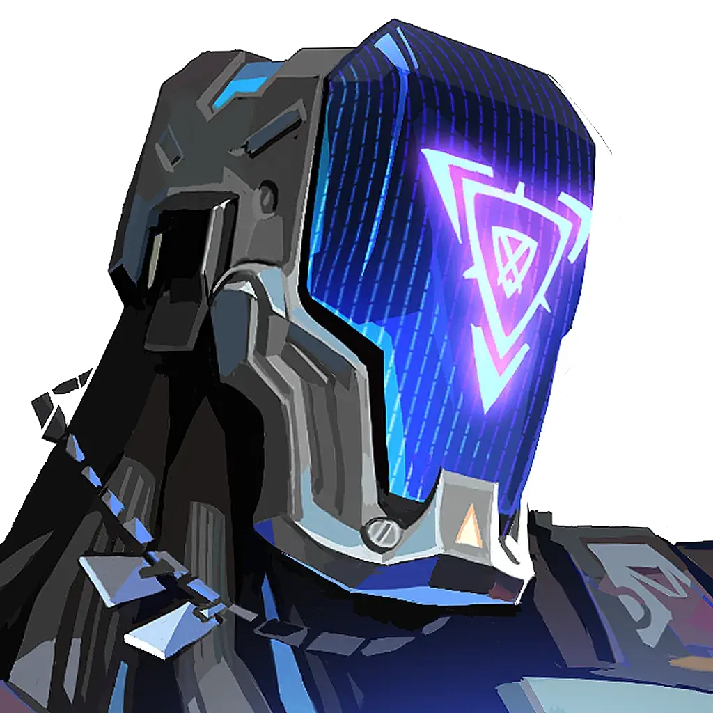
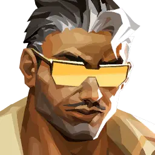
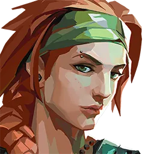

척후대






⚡ 강력한 정보전과 판짜기 중심의 인게임 리더
└ 공격/수비 가릴 것 없이 상대의 플레이를 파악해 경기를 주도적으로 설계하고 팀플레이를 통해 이득을 창출하는 플레이메이커 역할군
🔹인포·개시형 척후대 (소바, 페이드, 게코)
· 화살이나 추적귀 등을 통해 적의 동태와 위치 정보를 확실하게 확보
· 맵 상성(지형의 뚫린 정도)에 따라 포텐셜이 크게 좌우되며,
선진입하는 타격대의 역량에 영향을 많이 받음
🔹교전·유틸형 척후대 (브리치, 케이/오, 테호)
· 인포 유틸이 적거나 없는 대신, 시야 차단(섬광) 및 지진 강타 등 강력한
군중 제어(CC) 스킬셋 보유
· 사실상 생존기 대신 팀 보조 유틸을 받은 '2선 타격대'에
가까운 파괴적인 교전 개시(이니시에이팅) 가능
· 아군이 보지 못하는 각을 차단하여 적의 처치를 직접적으로 돕고 변수를 창출함